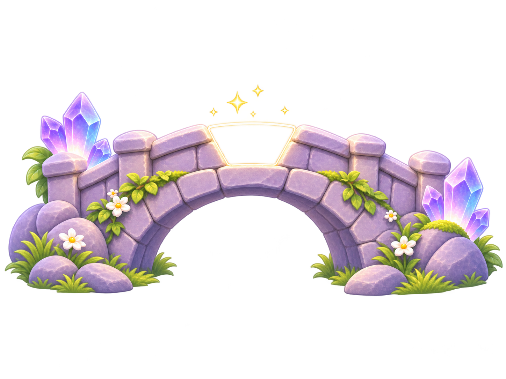
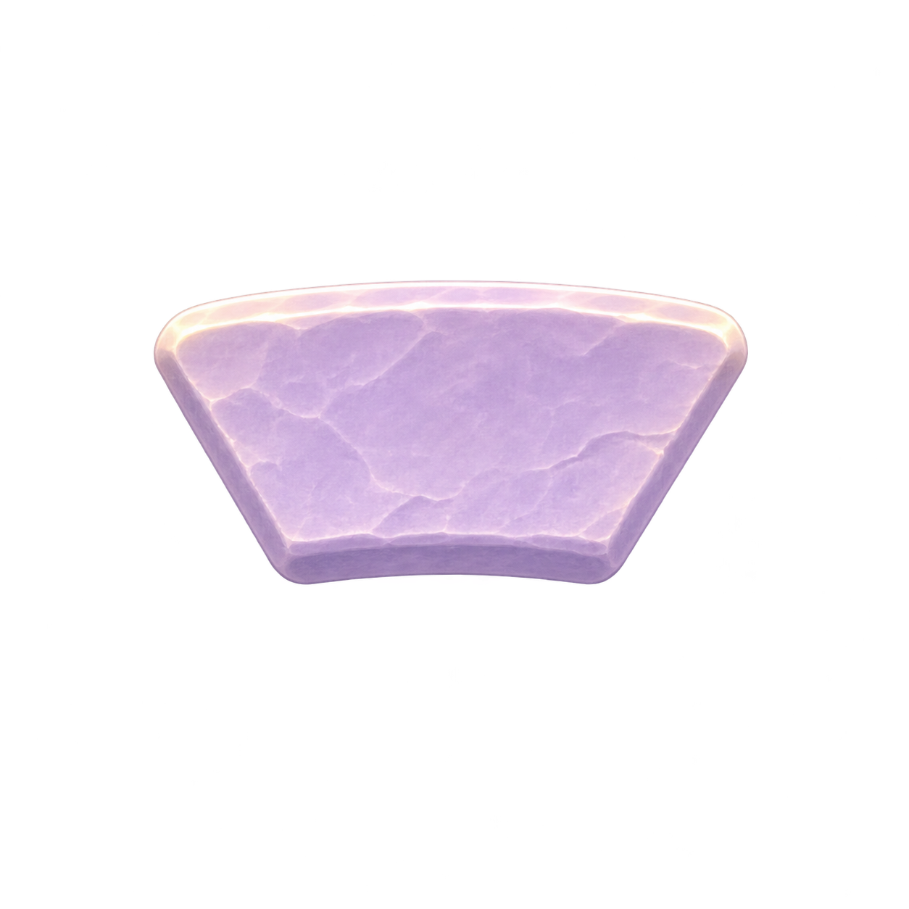

Третье испытание
Почини волшебный мост ✦
Посмотри на пустое место и найди кусочек, который подходит по форме.


Этот кусочек не подходит. Попробуй другой ✦
Посмотри на пустое место и найди кусочек, который подходит по форме.

